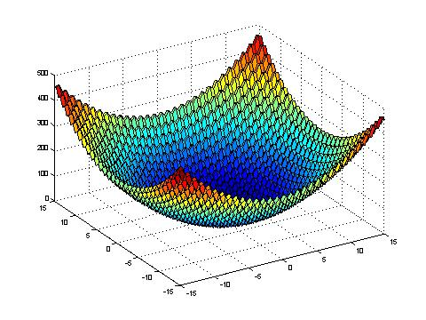
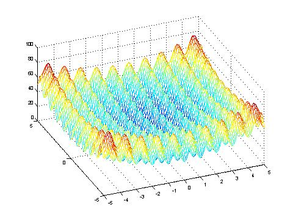
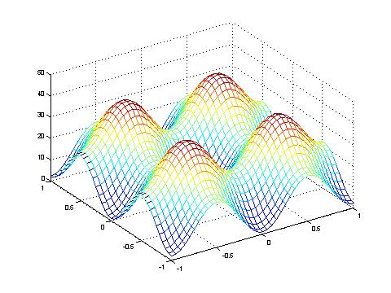

Rastrigin's function is symmetric. It is based on the simple parabola function (called f1 in the JavaEvA context), but it is multimodal because a modulation term on the basis of the cosine function is added. This evokes hills and valleys which are misleading local optima.
Values used for the following illustrations: A=10, ω=2*π, n=2.

Rastrigin's function within the co-domain -20>=x>=20

Rastrigin's function within the co-domain -5>=x>=5
Like Ackley's function a simple evolutionary algorithm would get stuck in a local optimum, while a broader searching algorithm would get out of the local optimum closer to the global optimum, which in this case is: f(x) = f(0, 0, ... , 0) = 0.

Rastrigin's function close to its optimum.
Darrell Whitley, Soraya Rana, John Dzubera, Keith E. Mathias. Evaluating Evolutionary Algorithms. Artificial Intelligence, 85(1-2):245-276. 1996.
Eberhard Schoeneburg, Frank Heinzmann, Sven Feddersen. Genetische Algorithmen und Evolutionstrategien - Eine Einfuehrung in Theorie und Praxis der simulierten Evolution. Addison-Wesley, 1994.